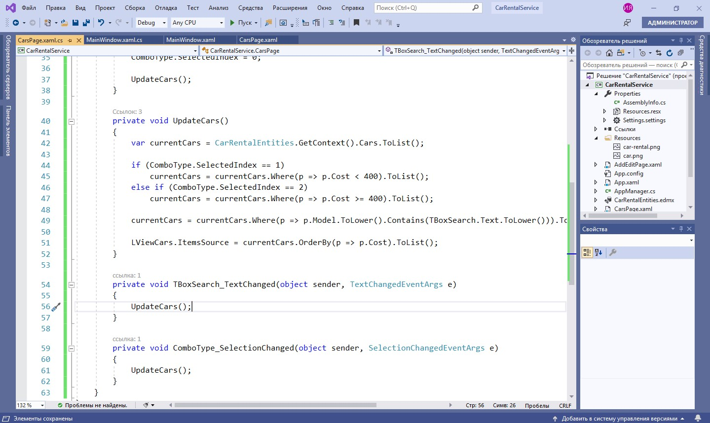

Продолжим разработку настольного приложения и поговорим об альтернативном DataGrid’у элементе, который может отображать информацию из базы данных — ListView. Как правило, он представляет собой стандартный список. Однако при желании вы можете сделать сложную компоновку объекта, которую не получилось бы реализовать с помощью DataGrid. Также можно вывести элементы не только построчно, но и, например, плитками, реализовать поиск и фильтрацию информации.
Вывод информации об автомобилях с ListView
Для вывода информации об автомобилях добавляем новую страницу с ListView. Переходим на нее сразу после инициализации компонентов MainWindow.
Подготавливаем разметку грида — это две строки.
Добавляем элемент ListView, размечаем в гриде и задаем имя.
Для вывода информации об автомобиле создается шаблон элемента в списке — то представление, которое должно отображаться для каждого элемента.
Создаем шаблон и размечаем его грид, указав при этом размер строк.
Добавляем в ресурсы изображение, которое будем выводить при отсутствии картинки у автомобиля.
Добавляем изображение автомобиля в верстку, установив необходимые атрибуты.
Теперь задаем объекты для привязки, а также изображение, если изображения автомобиля не будет.
Добавляем текстовые поля для наименования, указав: перенос текста, выравнивание, большой шрифт; для стоимости, указав: выравнивание, также большой шрифт, но делаем текст жирным; номер — выравниваем по правому краю; и цвет — выравниваем по левому краю.
Добавляем привязки для наименования, стоимости, номера и цвета.
Загружаем коллекцию «список» в коде.
Мы не загрузили автомобили в список — наш ListView.
Запускаем приложение.
Работаем над форматом отображения стоимости, номера и цвета. Указываем StringFormat для указания цены (два знака после запятой), примечание к номеру и цвету. Делать это можно прямо во время запуска приложения.
Теперь изменяем представление ListView на плитку. У нас в качестве ItemsPanel будет находиться RowPanel, который позволяет нам переносить элементы в виде плиток. И не забываем убрать горизонтальную прокрутку в ListView.

Проверяем результат.
Реализация поиска и фильтрации информации
Как говорилось ранее, для работы с большими объемами информации полезно реализовать поиск и фильтрацию. Как это работает? Пользователь вводит в специальные элементы управления данные для поиска или выбирает категории из списка для фильтрации. Затем в коде разработчик приводит коллекцию данных к виду, который соответствует поиску, и загружает результаты в ListView. Давайте сделаем это.
Для начала необходимо подготовить внешний вид страницы. Добавляем элементы для поиска и фильтрации. Для поиска это будет TextBox, для фильтрации — ComboBox, который представляет собой выпадающий список объектов. Обязательно даем подсказки, чтобы пользователь знал, что именно вводить. И устанавливаем атрибуты, например, на выравнивание и размеры. Также указываем, какое поле отображать для ComboBox. Делать это мы будем также в RowPanel, чтобы переносить элементы при изменениях размера экрана.
В плане удобства использования наиболее выигрышно выглядит механизм, когда результаты поиска выводятся сразу по мере ввода ключевого слова или выбора значения в выпадающем списке. Поэтому мы обработаем соответствующие события на каждый элемент.
Во-первых, это TextChanged на изменение текста для поиска.
Затем при изменении выбора в выпадающем списке — Selection Changed.
Загружаем данные в ComboBox, добавив типы автомобилей. Делается это в коде.
Устанавливаем стартовые значения для элемента ComboBox.
Обрабатываем методы поиска и фильтрации так, чтобы они работали вместе. Для этого в одном методе выполним фильтрацию коллекции, поиск по ней и сортировку, а затем вызываем этот метод из обработчиков событий всех наших элементов управления.
Для начала создаем метод UpdateCars()
Выполняем фильтрацию, поиск и сортировку. После этого загружаем полученные результаты в коллекцию.
Вызываем этот метод в каждом обработчике элементов управления и при запуске страницы.

Итоги
ListView предлагает более гибкий способ для отображения данных, с которыми можно взаимодействовать так же, как и с DataGrid. Кроме того, методы поиска и фильтрации значительно упрощают процесс выборки информации, что повышает удобство пользования программой.